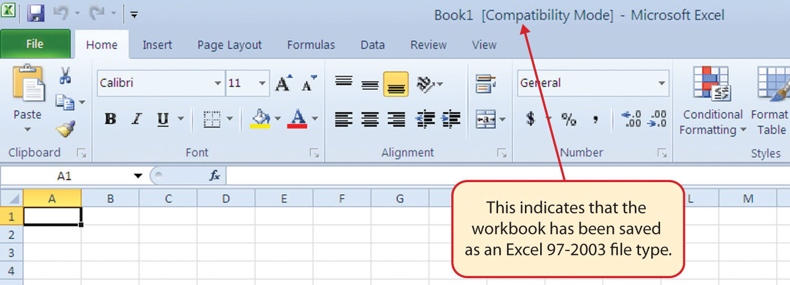

Microsoft® Office contains a variety of tools that help people accomplish many personal and professional objectives. Microsoft Excel is perhaps the most versatile and widely used of all the Office applications. No matter which career path you choose, you will likely need to use Excel to accomplish your professional objectives, some of which may occur daily. This chapter provides an overview of the Excel application along with an orientation for accessing the commands and features of an Excel workbook.
Follow-along file: Not needed for this skill
Taking a very simple view, Excel is a tool that allows you to enter quantitative data into an electronic spreadsheet to apply one or many mathematical computations. These computations ultimately convert that quantitative data into information. The information produced in Excel can be used to make decisions in both professional and personal contexts. For example, employees can use Excel to determine how much inventory to buy for a clothing retailer, how much medication to administer to a patient, or how much money to spend to stay within a budget. With respect to personal decisions, you can use Excel to determine how much money you can spend on a house, how much you can spend on car lease payments, or how much you need to save to reach your retirement goals. We will demonstrate how you can use Excel to make these decisions and many more throughout this text.
Figure 1.1 "Example of an Excel Worksheet with Embedded Chart" shows a completed Excel worksheet that will be constructed in this chapter. The information shown in this worksheet is top-line sales data for a hypothetical merchandise retail company. The worksheet data can help this retailer determine the number of salespeople needed for each month, how much inventory is needed to satisfy sales, and what types of products should be purchased. Notice that the embedded chart makes it very easy to see which months have the highest unit sales.
Figure 1.1 Example of an Excel Worksheet with Embedded Chart
Follow-along file: Not needed for this skill
The following steps will guide you in starting the Excel application. Note that these steps along with Figure 1.2 "Start Menu" relate to the Windows 7 operating system, which is very similar to the Windows Vista operating system.
Figure 1.2 Start Menu
Follow-along file: Not needed for this skill
Once Excel is started, a blank workbook will open on your screen. A workbookAn Excel file that contains one or more worksheets. is an Excel file that contains one or more worksheetsMay also be referred to as a spreadsheet and contains rectangles called cells for entering numeric and nonnumeric data. (sometimes referred to as spreadsheets). Excel will assign a file name to the workbook, such as Book1, Book2, Book3, and so on, depending on how many new workbooks are opened. Figure 1.3 "Blank Workbook" shows a blank workbook after starting Excel.
Figure 1.3 Blank Workbook
Your workbook should already be maximized (or shown at full size) once Excel is started, as shown in Figure 1.3 "Blank Workbook". However, if your screen looks like Figure 1.4 "Restored Worksheet" after starting Excel, you should click the Maximize button, as shown in the figure.
Figure 1.4 Restored Worksheet
Follow-along file: Not needed for this skill
Data are entered and managed in an Excel worksheet. The worksheet contains several rectangles called cells for entering numeric and nonnumeric data. Each cellA specific location on a worksheet where data are entered and stored. in an Excel worksheet contains an address, which is defined by a column letter followed by a row number. For example, the cell that is currently activated in Figure 1.4 "Restored Worksheet" is A1. This would be referred to as cell locationA column letter followed by a row number used to identify specific cells on a worksheet. A1 or cell referenceWhen cell locations are used in formulas, Excel will reference the data that is entered into the cell. The cell reference is the cell location address. A1. The following steps explain how you can navigate in an Excel worksheet:
Check to make sure column letter D and row number 5 are highlighted in orange, as shown in Figure 1.5 "Activating a Cell Location".
Figure 1.5 Activating a Cell Location
Release the left mouse button. You should see several cells highlighted, as shown in Figure 1.6 "Highlighting a Range of Cells". This is referred to as a cell rangeAny group of contiguous cell locations; a cell range is noted as two cell locations separated by a colon. and is documented as follows: A1:D5. Any two cell locations separated by a colon are known as a cell range. The first cell is the top left corner of the range, and the second cell is the lower right corner of the range.
Figure 1.6 Highlighting a Range of Cells

Basic Worksheet Navigation
Follow-along file: Not needed for this skill
Excel’s features and commands are found in the RibbonThe upper area of the Excel screen that contains several tabs running across the top. Each tab provides access to a different set of Excel commands., which is the upper area of the Excel screen that contains several tabs running across the top. Each tab provides access to a different set of Excel commands. Figure 1.7 "Ribbon for Excel" shows the commands available in the Home tab of the Ribbon. Table 1.1 "Command Overview for Each Tab of the Ribbon" provides an overview of the commands that are found in each tab of the Ribbon.
Figure 1.7 Ribbon for Excel
Table 1.1 Command Overview for Each Tab of the Ribbon
| Tab Name | Description of Commands |
|---|---|
| File | Also known as the Backstage view of the Excel workbook. Contains all commands for opening, closing, saving, and creating new Excel workbooks. Includes print commands, document properties, e-mailing options, and help features. The default settings and options are also found in this tab. |
| Home | Contains the most frequently used Excel commands. Formatting commands are found in this tab along with commands for cutting, copying, pasting, and for inserting and deleting rows and columns. |
| Insert | Used to insert objects such as charts, pictures, shapes, PivotTables, Internet links, symbols, or text boxes. |
| Page Layout | Contains commands used to prepare a worksheet for printing. Also includes commands used to show and print the gridlines on a worksheet. |
| Formulas | Includes commands for adding mathematical functions to a worksheet. Also contains tools for auditing mathematical formulas. |
| Data | Used when working with external data sources such as Microsoft® Access®, text files, or the Internet. Also contains sorting commands and access to scenario tools. |
| Review | Includes Spelling and Track Changes features. Also contains protection features to password protect worksheets or workbooks. |
| View | Used to adjust the visual appearance of a workbook. Common commands include the Zoom and Page Layout view. |
The Ribbon shown in Figure 1.7 "Ribbon for Excel" is full, or maximized. The benefit of having a full Ribbon is that the commands are always visible while you are developing a worksheet. However, depending on the screen dimensions of your computer, you may find that the Ribbon takes up too much vertical space on your worksheet. If this is the case, you can minimize the Ribbon by clicking the button shown in Figure 1.7 "Ribbon for Excel". When minimized, the Ribbon will show only the tabs and not the command buttons. When you click on a tab, the command buttons will appear until you select a command or click anywhere on your worksheet.
Minimizing or Maximizing the Ribbon
Follow-along file: Not needed for this skill
The Quick Access ToolbarLocated at the upper-left side of the Excel screen above the Ribbon, this toolbar provides access to the most frequently used commands, such as Save and Undo. is found at the upper left side of the Excel screen above the Ribbon, as shown in Figure 1.3 "Blank Workbook". This area provides access to the most frequently used commands, such as Save and Undo. You also can customize the Quick Access Toolbar by adding commands that you use on a regular basis. By placing these commands in the Quick Access Toolbar, you do not have to navigate through the Ribbon to find them. To customize the Quick Access Toolbar, click the down arrow as shown in Figure 1.8 "Customizing the Quick Access Toolbar". This will open a menu of commands that you can add to the Quick Access Toolbar. If you do not see the command you are looking for on the list, select the More Commands option.
Figure 1.8 Customizing the Quick Access Toolbar
In addition to the Ribbon and Quick Access Toolbar, you can also access commands by right clicking anywhere on the worksheet. Figure 1.9 "Right-Click Menu" shows an example of the commands available in the right-click menu.
Figure 1.9 Right-Click Menu

Follow-along file: Not needed for this skill
If you have used Office 2007, you may have noticed that the Office button has disappeared in the 2010 version. It has been replaced with the File tab on the far left side of the Ribbon. The File tab is also known as the Backstage viewThis view, which is opened through the File tab on the Ribbon, contains a variety of features and commands related to the workbook that is currently open. of the workbook. It contains a variety of features and commands related to the workbook that is currently open, new workbooks, or workbooks stored in other locations on your computer or network. Figure 1.10 "File Tab or Backstage View of a Workbook" shows the options available in the File tab or Backstage view. To leave the Backstage view and return to the worksheet, click any tab on the Ribbon or click the image of the worksheet on the right side of the window. You must click the Info button (highlighted in green in Figure 1.10 "File Tab or Backstage View of a Workbook") to see the image of your worksheet on the right side of the window.
Figure 1.10 File Tab or Backstage View of a Workbook

Included in the File tab are the default settings for the Excel application that can be accessed and modified by clicking the Options button. Figure 1.11 "Excel Options Window" shows the Excel Options window, which gives you access to settings such as the default font style, font size, and the number of worksheets that appear in new workbooks.
Figure 1.11 Excel Options Window

Follow-along file: Not needed for this skill
Once you create a new workbook, you will need to change the file name and choose a location on your computer or network to save it. The following steps explain how to save a new workbook and assign it a file name. It is important to remember where you save this workbook on your computer or network as you will be using this file in the Section 1.2 "Entering, Editing, and Managing Data" to construct the workbook shown in Figure 1.1 "Example of an Excel Worksheet with Embedded Chart".
Figure 1.12 Save As Dialog Box

Save As
Follow-along file: Open a blank workbook.
If you are working with someone who is using a version of Microsoft Office that is older than Office 2007, you will have to save your workbook under the Excel 97-2003 Workbook format. A person who is running Office 2003 will not be able to open workbooks that are saved under the Office 2010 or Office 2007 file types. You can save a workbook as an Excel 97-2003 file type by clicking the down arrow next to the “Save as type” box in the Save As dialog box (see Figure 1.12 "Save As Dialog Box").
You can also change the file type of your workbook by using the File tab on the Ribbon. The following steps explain this method:
Figure 1.13 Changing the File Type of a Workbook

No Office 2007 File Type
Workbooks that are created in Office 2010 are automatically compatible with Office 2007. A person who is running Office 2007 will be able to open, edit, and save workbooks created in Office 2010.
When you convert an existing workbook created in Office 2010 to the Excel 97-2003 file type, you may not notice any changes on the workbook itself. If you are using a feature or format that is not compatible with Office 97-2003, a warning will appear upon saving the file. You may want to remove these features and formats before sending the workbook to a person who is running an older version of Office. When you open a file that is saved in the Excel 97-2003 format, you will see the Compatibility Mode indicator next to the workbook name, as shown in Figure 1.14 "Workbook That Has Been Saved in Excel 97-2003 Format".
Figure 1.14 Workbook That Has Been Saved in Excel 97-2003 Format
Follow-along file: Continue with a blank workbook or open a new one.
The Status BarLocated below the worksheet tabs on the Excel screen, it displays a variety of information, such as the status of certain keys on your keyboard (e.g., CAPS LOCK), the available views for a workbook, the magnification of the screen, or mathematical functions that can be performed when data are highlighted on a worksheet. is located below the worksheet tabs on the Excel screen (see Figure 1.15 "Customizing the Status Bar"). It displays a variety of information, such as the status of certain keys on your keyboard (e.g., CAPS LOCK), the available views for a workbook, the magnification of the screen, and mathematical functions that can be performed when data are highlighted on a worksheet. You can customize the Status Bar as follows:
Figure 1.15 Customizing the Status Bar

Follow-along file: Continue with a blank workbook or open a new one.
The Help feature provides extensive information about the Excel application. Although some of this information may be stored on your computer, the Help window will automatically connect to the Internet, if you have a live connection, to provide you with resources that can answer most of your questions. You can open the Excel Help window by clicking the question mark in the upper right corner of the screen (see Figure 1.3 "Blank Workbook"). Here you can search for specific topics or type a question in the upper-left side of the window, as shown in Figure 1.16 "Excel Help Window".
Figure 1.16 Excel Help Window
Excel Help
Which of the following responses best defines the notation A1:B15?
The Spell Check feature is in which tab of the Excel Ribbon?
Holding down the CTRL key and pressing the F1 key on your keyboard is used to
If you are sending an Excel workbook created in Office 2010 to a person who is running Office 2007, you should do the following: